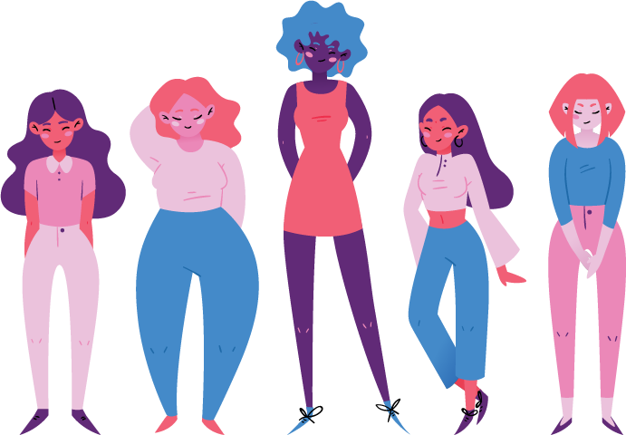

Tú eres dueña de tu cuerpo solo tú puedes decidir lo mejor para tu salud.
Aquí encontrarás información sobre cómo identificar y prevenir la violencia obstétrica, las leyes que te respaldan, y los diferentes métodos anticonceptivos que puedes utilizar.
Violencia obstétrica
¿Qué es?
La violencia en la atención obstétrica es toda acción u omisión por parte del personal de salud que cause daño físico o psicológico a la mujer durante el embarazo, parto o puerperio, actos que constituyen una violación a los derechos humanos y reproductivos de las mujeres.
Formas en que se representa
- Regaños
- Burlas
- Ironías
- Insultos
- Amenazas
- Reclamos
- Discriminación
- Humillación
- Manipulación
- Negación al tratamiento - Falta de acceso al sistema de salud - Atención deficiente en el sistema
Legislaciones que te respandan en México
Las obligaciones y criterios que debe de seguir el personal que brinda servicios de salud a las mujeres durante el embarazo, parto y puerperio, así como la que recibe la persona recién nacida se encuentra regulada por la Norma Oficial Mexicana NOM-007-SSA2-2016.
Norma Oficial Mexicana PARA LA ATENCION DE LA MUJER DURANTE EL EMBARAZO, PARTO Y PUERPERIO, Y DE LA PERSONA RECIEN NACIDA